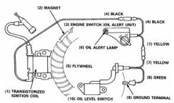
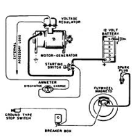
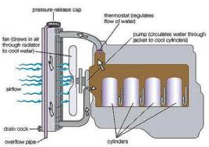
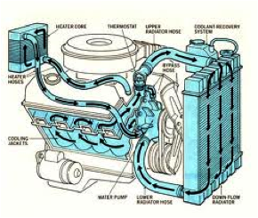

FMP 211 :: Lecture 03 ::DIFFERENT SYSTEMS OF IC ENGINE – COOLING, LUBRICATING, FUEL INJECTION SYSTEMS

Different systems available for efficient functioning of an engine are as follows
- fuel supply system
- lubrication system
- ignition system
- cooling system
- governor
Fuel is a substance consumed by the engine to produce power. The common fuel for Internal Combustion engines are
- Petrol
- Power kerosene
- High speed diesel
Calorific value of fuel
The heat liberated by combustion of a fuel is known as calorific value or heat value of the fuel. It is expressed in kcal/kg of the fuel
| Sl. No | Name of fuel |
Calorific value, kcal/kg |
1 |
Light Diesel Oil (L.D.O) |
10300 |
2 |
High speed diesel oil (HSD) |
10550 |
3 |
Power kerosene |
10850 |
4 |
Petrol |
11100 |
FUEL SUPPLY SYSTEM IN SPARK IGNITION ENGINE
The fuel supply system of spark ignition engine consists of
1. Fuel tank 2. Sediment bowl
3. Fuel lift pump 4. Carburetor
5. Fuel pipes
In some spark ignition engines the fuel tank is placed above the level of the carburetor. The fuel flows from fuel tank to the carburetor under the action of gravity. There are one or two filters between fuel tank and carburetor. A transparent sediment bowl is also provided to hold the dust and dirt of the fuel. If the tank is below the level of carburetor, a lift pump is provided in between the tank and the carburetor for forcing fuel from tank to the carburetor of the engine. The fuel comes from fuel tank to sediment bowl and then to the lift pump. From there the fuel goes to the carburetor through suitable pipes. From carburetor the fuel goes to the engine cylinder through inlet manifold of the engine.
Carburetor
The process of preparing air-fuel mixture away from the engine cylinder is called carburetion. and the device in which this process takes is called carburetor.
Functions of carburetor
- To mix the air and fuel thoroughly
- To atomize the fuel
- To regulate the air- fuel ratio at different speeds and loads on the engine.
- to supply correct amount of mixture at different speeds and loads
FUEL SUPPLY SYSTEM IN DIESEL ENGINE
Fuel supply system of diesel engine consists of the following components
- Fuel tank
- Fuel lift pump or fuel feed pump
- Fuel filter
- Fuel injection pump
- High pressure pipe
- Over flow valve
- Fuel injector
Fuel is drawn from fuel tank by fuel feed pump and forced to injection pump through fuel filter. The injection pump supplies high pressure fuel to injection nozzles through delivery valves and high pressure pipes. Fuel is injected into the combustion chamber through injection nozzles. The fuel that leaks out from the injection nozzles passes out through leakage pipe and returns to the fuel tank through the over flow pipe.
Over flow valve installed at the top of the filter keeps the feed pressure under specified limit. If the feed pressure exceeds the specified limit , the over flow valve opens and then the excess fuel returns to fuel tank through over flow pipe.
Fuel tank
It is a storage tank for diesel. A wire gauge strainer is provided under the cap to prevent foreign particles entering the tank
Fuel lift pump
It transfers fuel from fuel tank to inlet gallery of fuel injection pump
Preliminary filter (sediment bowl assembly)
This filter is mostly fitted on fuel lkift pump. It prevents foreign materials from reaching inside he fuel line. It consists of a glass cap with a gasket.
Fuel filter
Mostly two stage filters are used in diesel engines
1. Primary filter 2. Secondary filter
Primary filter removes coarse materials, water and dust. Secondary filter removes fine dust particles.
Fuel injection pump
It is a high pressure pump which supplies fuel to the injectors according to the firing order of the engine. It is used to create pressure varying from 120 kg/cm2 to 300 kg/cm2. It supplies the required quantity of fuel to each cylinder at appropriate time.
Air venting of fuel system
When air has entered the fuel lines or suction chamber of the injection pump, venting should be done properly.. Air is removed by the priming pump through the bleeding holes of the injection pump.
Fuel injector
It is the component which delivers finely atomized fuel under high pressure to combustion chamber of the engine. Modern tractor engines use fuel injectors which have multiple holes. Main parts of injectors are nozzle body, and needle valve. The needle valve is pressed against a conical seat in the nozzle body by a spring. The injection pressure is adjusted by adjusting a screw. In operation, fuel from injection pump enters the nozzle body through high pressure pipe. When fuel pressure becomes so high that it exceeds the set spring pressure, the needle valve lifts off its seat. The fuel is forced out of the nozzle spray holes into the combustion chamber.
LUBRICATION SYSTEM
IC engine is made of moving parts. Duo to continuous movement of two metallic surfaces over each other, there is wearing of moving parts, generation of heat and loss of power in engine. Lubrication of moving parts is essential to prevent all these harmful effects.
Purpose of lubrication-
- Reducing frictional effect
- Cooling effect
- Sealing effect
- Cleaning effect
Types of lubricants
Lubricants are obtained from animal fat, vegetables and minerals. Vegetable lubricants are obtained from seeds, fruits and plants. Cotton seed oil, olive oil, linseed oil, caster oil are used as lubricants. Mineral lubricants are most popular for engines and machines. It is obtained from crude petroleum found in nature.. Petroleum lubricants are less expensive and suitable for internal combustion engines
Engine lubrication system
The lubricating system of an engine is an arrangement of mechanisms which maintains the supply of lubricating oil to the rubbing surfaces of an engine at correct pressure and temperature.
The parts which require lubrication are
- Cylinder walls and piston]
- Piston pin
- crankshaft and connecting rod bearings
- Camshaft bearings
- Valve operating mechanism
- Cooling fan
- Water pump and
- Ignition mechanism
Types of lubricating systems
- Splash system
- Forced feed system
IGNITION SYSTEM
Fuel mixture of IC engine must be ignited in the engine cylinder at proper time for useful work. Arrangement of different components for providing ignition at proper time in the engine cylinder is called Ignition system
Types of ignition systems
- Ignition by electric spark or spark ignition
- Ignition by heat of compression or compression ignition
- Ignition by hot tube or hot bulb
- Ignition by open fire
Only the first two are important methods for modern engines
SPARK IGNITION
The purpose of spark ignition is to deliver a perfectly timed surge of electricity across an open gap in each cylinder at the exact moment so that the charge may start burning with maximum efficiency
Two types of spark ignition are a) Battery ignition b) magneto ignition
MAGNETO IGNITION SYSTEM
In magneto ignition system a magneto is used to generate electric current for producing spark. A high tension magneto generates a very high voltage needed for spark plug
Main components of magneto ignition system
a) Frame b) Permanent magnet
c) Armature d) Soft iron field
e) rotor f) Primary and secondary winding
g) Breaker points h) Condenser
The armature consists of an iron core on which there are two sets of windings 1) Primary 2) Secondary
The armature is driven by the engine. As the armature rotates, primary windings cut the lines of force of magnetic field and an induced current flows in the primary circuit. As the primary current reaches its maximum value in each direction, the primary circuit is suddenly opened by a contact breaker and the current collapses. This action induces a very high voltage in the secondary winding which causes a momentary spark to jump at the spark plug gap. A distributor is provided which carries current to the spark plug through high tension wires. The condenser is used to eliminate the arching at the breaker points and intensifying the current in the secondary circuit. For multi cylinder engines, a distributor and a rotor are required to distribute the current to different spark plugs.
|  |  |
| Magneto ignition system | Magneto ignition system |
COOLING SYSTEM
Fuel is burnt inside the cylinder of an internal combustion engine to produce power. The temperature produced on the power stroke of an engine can be as high as 1600 ºC and this is greater than melting point of engine parts.. The best operating temperature of IC engines lie between 140 F and 200 ºF and hence cooling of an IC engine is highly essential. . It is estimated that about 40% of total heat produced is passed to atmosphere via exhaust, 30% is removed by cooling and about 30% is used to produce power.
Purpose of cooling
- To maintain optimum temperature of engine for efficient operation under all conditions.
- To dissipate surplus heat for protection of engine components like cylinder, cylinder head, piston, piston rings, and valves
- To maintain the the lubricating property of oil inside engine
Methods of cooling
- Air cooled system
- Water cooled system
AIR COOLING SYSTEM
Air cooled engines are those engines in which heat is conducted from the working components of the engine to the atmosphere directly.
Principle of air cooling- The cylinder of an air cooled engine has fins to increase the area of contact of air for speedy cooling. The cylinder is normally enclosed in a sheet metal casing called cowling. The fly wheel has blades projecting from its face, so that it acts like a fan drawing air through a hole in the cowling and directed it around the finned cylinder. For maintenance of air cooled system, passage of air is kept clean by removing grasses etc. by a stiff brush of compressed air
Advantages of air cooled engine
- It is simple in design and construction
- Water jackets, radiators, water pump, thermostat, pipes, hoses are not required
- It is more compact
- Lighter in weight
Disadvantages
- There is uneven cooling of engine parts
- Engine temperature is generally high during working period
Air cooled engine
WATER COOLING SYSTEM
Engines using water as cooling medium are called water cooled engines. Water is circulated round the cylinders to absorb heat from the cylinder walls. The heated water is conducted through a radiator to remove the heat and cool the water.
Methods of water cooling
- Open jacket or hopper method
- Thermo siphon method
- Forced circulation method
1. Open jacket method
There is a hopper or jacket containing water which surrounds the engine cylinder. So long as the hopper contains water the engine continues to operate satisfactorily. As soon as the water starts boiling it is replaced by cold water.. The hopper is large enough to run for several hours without refilling. A drain plug is provided in a low accessible position for draining water as and when required.
2. Thermo siphon method
It consists of a radiator, water jacket, fan, temperature gauge and hose connections. The system is based on the principle that heated water which surrounds the cylinder becomes lighter and it rises upwards in liquid column. Hot water goes to the radiator where it passes through tubes surrounded by air. Circulation of water takes place due to the reason that water jacket and radiator are connected at both sides i.e. at top and bottom. A fan is driven with the help of a V belt to suck air through tubes of the radiator unit, cooling radiator water. The disadvantage of the system is that circulation of water is greatly reduced by accumulation of scale or foreign matter in the passage and consequently causing over heating of the engine.
3. Forced Circulation system
In this method, a water pump is used to force water from radiator to the water jacket of the engine. After circulating the entire run of water jacket, water comes back to the radiator where it loses its heat by the process of radiation. To maintain the correct engine temperature , a thermostat valve is placed at the outer end of cylinder head. Cooling liquid is by-passed through the water jacket of th3e engine until the engine attains the desired temperature. The thermostat valve opens and the by-pass is closed, allowing the water to go to the radiator. The system consists of the following components
1. Water pump 2. Radiator
3. Fan 4. Fan-belt
5. Water jacket 6. Thermostat valve
7. Temperature gauge 7. Hose pipe
Water pump
It is a centrifugal pump. It draws the cooled water from bottom of the radiator and delivers it to the water jackets surrounding the engine..
Thermostat valve
It is a control valve used in cooling system to control the flow of water when activated by a temperature signal.
Fan
The fan is mounted on the water pump shaft. It is driven by the same belt that drives the pump and dynamo. The purpose of radiator is to provide strong draft of air through the radiator to improve engine cooling
Water jacket - Water jackets are passages cored out around the engine cylinder as well as around the valve opening
|  |  |
| Forced Circulation cooling system- Water cooled engine | Forced Circulation cooling system- Water cooled engine |
GOVERNOR
Governor is mechanical device, designed to control the soeed of the engine with in specified limit., used on tractor or stationary engine for
- Maintaining a nearly constant speed of engine under different load conditions
- Protecting the engine and attached equipments against high speeds, when the load is removed or reduced
Types of governors
- Centrifugal governor
- Pneumatic governor
- Hydraulic governor
Governor regulation
The governor is fited on an engine for maintaining a constant speeed , even then some variation in speed is observed at full load and no load conditions. In normal working , a variation of about 100 rev/min is observed between full load and noload conditions for a good governor. Hence it is possible to regulate the governor to maintain a higher or lower speed by changing the tention of the spring . The extent of regulatyion done , is expressed inbterms of percentage called percentage regulation. This is also called speed drop. It is the variation in the engine speed between full load and no load condition. It is usually expressed as percentage of rated speed. This is given by
N1 – N2
R = ------------------ X 100
( N1 + N2 )/2
Where ,
R – % regulation,
N1 – Speed at no load, rpm
N2 – Speed at full load, rpm
Problem- Find the percentage regulation in a governor if speed at no load is 1600 rev/min and at full load is 1500 rev/min
Governor hunting
Governor hunting is the erratic variation of the speed of the governor when it over compensates for speed changes. When the governor produces a periodic effect on the engine speed like too fast and then too slow, then too fast and so on it is a sign of governor hunting. In such cases it is observed that when the engine speeds up quickly, the governor suddenly responds, the speed drops quickly, the governor again responds and this process is repeated. The reason for governor hunting may be due to incorrect adjustment of fuel pump or carburetor, improper adjustment of the idling screw and excessive friction. Hunting may be due to governor being too stiff or due to some obstruction in free movement of governor components.
| Download this lecture as PDF here |